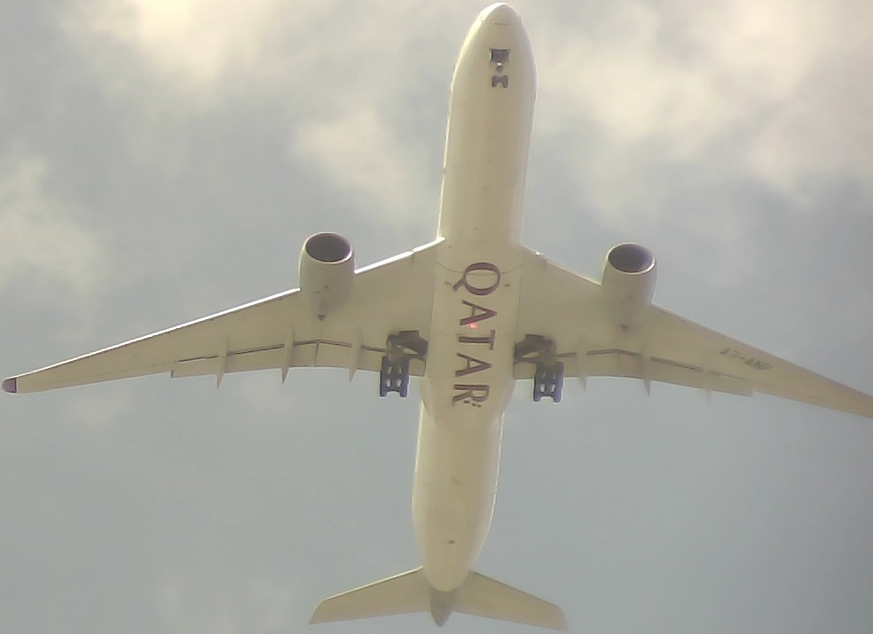
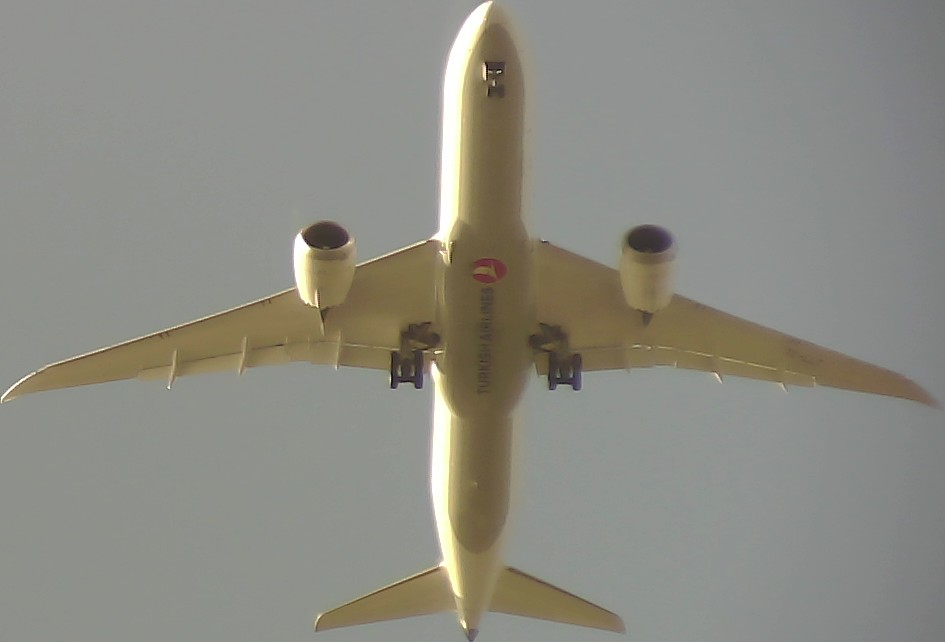

Click here to see live flight data and airplane pictures.

The plane spotter is a Python program that uses a software defined radio (SDR) to capture overhead flight data, and a type of AI called the Convolutional Neural Network (CNN) to capture the airplane picture. The data and pictures are stored on a Google Cloud Storage S3 bucket as an html document for viewing.
Click here to see the Python code.
Some examples
2025-05-14 17:17:24
Aircraft: 4d0131 | Type: 747 4EVERF | Flight: CLX73J | Altitude: 2675 feet | Speed: 160 knots | Vertical Speed: -768 feet/min
2025-05-21 17:28:03
Aircraft: a2ed83 | Type: MD-11 F | Flight: UPS2752 | Altitude: 2400 feet | Speed: 174 knots | Vertical Speed: -1024 feet/min
2025-05-24 14:57:35
Aircraft: 06a12c | Type: A350 1041 | Flight: QTR48R | Altitude: 2450 feet | Speed: 163 knots | Vertical Speed: -832 feet/min
2025-05-30 11:40:45
Aircraft: ab5257 | Type: 787 9 | Flight: AAL963 | Altitude: 2350 feet | Speed: 233 knots | Vertical Speed: 1664 feet/min
2025-05-30 16:23:14
Aircraft: 3c64ee | Type: A340 313X | Flight: DLH439 | Altitude: 1775 feet | Speed: 187 knots | Vertical Speed: 448 feet/min
2025-06-01 13:28:30
Aircraft: a3ed7c | Type: A320 212 | Flight: DAL1071 | Altitude: 2425 feet | Speed: 168 knots | Vertical Speed: -960 feet/min
2025-06-05 13:30:25
Aircraft: a70bc9 | Type: CRJ 900 LR NG | Flight: JIA5295 | Altitude: 2375 feet | Speed: 128 knots | Vertical Speed: -832 feet/min
2025-06-06 14:45:12
Aircraft: a9ddb0 | Type: 777 323ER | Flight: AAL21 | Altitude: 2375 feet | Speed: 171 knots | Vertical Speed: -896 feet/min
2025-06-06 18:46:38
Aircraft: 4bb194 | Type: 787 9 | Flight: THY83J | Altitude: 2400 feet | Speed: 166 knots | Vertical Speed: -896 feet/min
2025-06-09 12:06:14
Aircraft: adeca5 | Type: A321 231SL | Flight: AAL1312 | Altitude: 2900 feet | Speed: 216 knots | Vertical Speed: 1088 feet/min